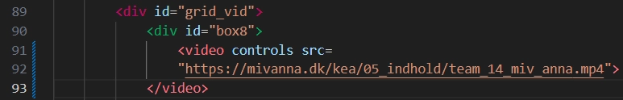

Tema 5: Grundlæggende indhold

Hjemmesiden: “Skatkammer, Camilla Plum”
Til tema 5 opgaven var den sidste del af forløbet en gruppeopgave, hvor vi havde til mål at redesign og forbedre UX på den valgte hjemmeside.
Hvad har jeg lært?
Jeg har lært at arbejde med filformatet mp4 samt redigering af video indhold.
Første del af forløbet foregik i parvis, hvor vi samlede video materiale og efterfølgende
redigerede
vores egne videoer.
Dette inkluderede undervisning i klippeteori.
Herunder ser du min individuelle
videosite:
videosite
Værktøjer
I mit gruppeprojekt havde jeg ansvaret for at redesigne netbutikken. Jeg benyttede følgende værktøjer til at udføre denne opgave:
-
Scrum som er et samarbejdsværktøj, der tillod os at fastsætte mål, investering af tid og forventninger i fællesskab.
-
Premiere Pro og Audition blev brugt til at redigere videoer og fjerne uønsket støj fra lydfiler.
-
Bert i surveys brugte jeg til at præsentere modsættende udsagn, hvor svarpersoner kunne vælge fra en skala 1-10.
-
Interview blev anvendt til projektet for at opnå dybdegående indsigt i et vist emne.
-
Fysiske udstyr såsom mikrofoner og kameraer.
-
Udvidet viden inden for HTML med videotag.
-
Brug af Netlify, git og Github blev brugt til samarbejde omkring kode og webdesign.
Disse værktøjer er vigtige ift. designprocessen og udviklingen af et redesign, der skal være i overensstemmelse med kundens værdier.
Proces
Under min arbejdsproces stødte jeg på en udfordring med at sortere varerne i vores netbutik. Jeg
løste
dette ved at
bruge en kode fra Codepen: Nodws
codepen.
Jeg
tilpassede koden ved at erstatte
billederne og
"classes" med vores egen kode.
Endelige produkt
Herunder er resultatet af mit arbejde baseret på tema 5. Gennem hele processen har jeg forbedret mine færdigheder inden for videoredigering og fået erfaring med samarbejde om kodning og redesign af en hjemmeside for at imødekomme kundens værdier og ønsker.
Du er velkommen til at udforske siden og se mit projekt her:
Hjemmesiden:
“Skatkammer: Camilla Plum”